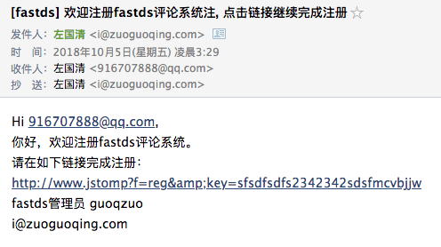
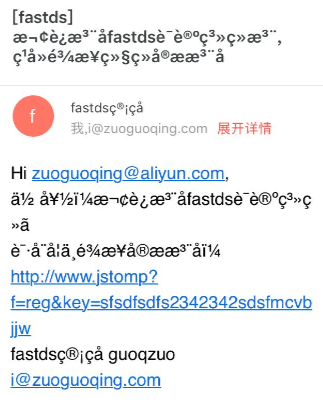
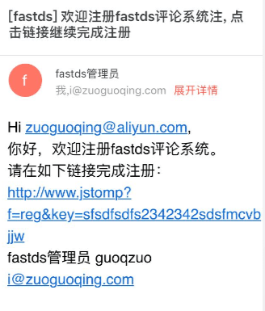

php发送邮件
邮件发送是一个很重要的功能，具体应用包括注册时邮箱验证、评论回复提醒、推送广告、线上异常报告等。一般网上php教程里面邮件发送很简单，一个mail()函数就搞定。但这个方法如果你去试，90%是不成功的。然后就会去搜php怎么发送邮件，搜到的答案基本没有直接使用mail()的，都是使用PHPMailer这个开源库，我一般的思路是在能不使用第三方库的时候尽量不去使用。但后面发现还是要使用这个库。
php发送邮件的两种方式
直接使用系统的mail()函数(需要本地邮件服务器)
最开始使用这个一直发送不出去，后面就在想如果这个发送成功了，接收到邮件时，来源的邮箱、名称会是什么，貌似根本就没有设置过。
try {
// $email = $un;
$subject = "[fastds] 评论系统注册链接".$un;
$message = "Hi ".$un.",<br> 你好，欢迎注册fastds评论系统。<br> 请在如下链接完成注册：<br> http://www.jstomp?f=reg&key=sfsdfsdfs2342342sdsfmcvbjjw<br>fastds管理员 guoqzuo<br>i@zuoguoqing.com";
$k = mail($un, $subject, $message);
echo $k;
// echo "邮件发送成功";
} catch (Exception $e) {
echo $e;
}后面查了下，在php.ini可以设置相关参数，但后来在网上收了下，这个方法需要本地安装有邮件服务器，但这种方式显然是不可行的，自己去配置太麻烦，而且就算发出邮件了，可能会直接被屏蔽。关键是网上的教程不好找，很少有这么做的。我的想法是依托qq邮箱来发送邮件。这样会稳定一点。PHPMailer有很多这种教程，是大家比较推荐的。
使用PHPMailer(可使用qq发邮件)
关于 PHPMailer - A full-featured email creation and transfer class for PHP，在github开源，有1w+ star，应该比较靠谱。现有的百度PHPMailer使用qq发邮件的教程都是比较旧的，直接将项目考到根目录使用，且目录结构、文件名都有变化。最后还是打算以官方文档为主，于是知道了composer，是php里面的一个引入第三方包的工具，会自动安装依赖。类似于node的npm，python的pip。目前来说是比较主流的。
在项目中引入composer
- 在系统中安装composer
// 这个命令会将composer.phar文件下载到当前目录
// curl -sS https://getcomposer.org/installer | php
// 将这个文件改名为composer并移动到系统的环境变量里，方便在任何目录使用
// mv composer.phar /usr/local/bin/composer- 在项目根目录创建 composer.json文件
{
"name": "fastds/fastds",
"description": "comment system",
"require": {
"phpmailer/phpmailer": "^6.0",
"monolog/monolog": "^1.23"
}
}- 执行composer安装
运行下面的命令(二选1)可以安装composer.json里面配置的依赖，如果没有composer.json文件会出错
# 如果下载composer.phar后没改名移动到环境变量
php composer.phar install
# 如果改名了且移动到了全局变量
composer install
# 也可以在不配置composer.json里面的require，直接运行命令安装最新phpmailer最新版本的
composer require phpmailer/phpmailer- 安装完成后，会多出一个composer.lock文件和一个vendor目录，vendor目录相当于node的node_modules目录
开始发送邮件
<?php
// Import PHPMailer classes into the global namespace
// These must be at the top of your script, not inside a function
use PHPMailer\PHPMailer\PHPMailer;
use PHPMailer\PHPMailer\Exception;
//Load Composer's autoloader
require '../vendor/autoload.php';
$mail = new PHPMailer(true);
try {
//Server settings
$mail->SMTPDebug = 1; // Enable verbose debug output
$mail->isSMTP(); // Set mailer to use SMTP
$mail->Host = 'smtp.qq.com'; // Specify main and backup SMTP servers
$mail->SMTPAuth = true; // Enable SMTP authentication
$mail->Username = '916707888@qq.com'; // SMTP username
$mail->Password = 'xxxxxxxxxxxxxxx'; // SMTP password，这里隐去了密码
$mail->SMTPSecure = 'ssl'; // Enable TLS encryption, `ssl` also accepted
$mail->Port = 465; // TCP port to connect to
$mail->CharSet = "UTF-8"; // 防止发送阿里云邮箱中文乱码
//Recipients
$mail->setFrom('i@zuoguoqing.com', 'fastds管理员'); // 设置来源的邮箱/名称
// $mail->addAddress('joe@example.net', 'Joe User'); // Add a recipient
$mail->addAddress($un); // Name is optional, $un为目标邮件地址
$mail->addCC('i@zuoguoqing.com'); // add cc，抄送
//Attachments
// $mail->addAttachment('/var/tmp/file.tar.gz'); // Add attachments
// $mail->addAttachment('/tmp/image.jpg', 'new.jpg'); // Optional name
//Content
$mail->isHTML(true); // Set email format to HTML
$mail->Subject = "[fastds] 欢迎注册fastds评论系统, 点击链接继续完成注册";
$mail->Body = "Hi ".$un.",<br> 你好，欢迎注册fastds评论系统。<br> 请在如下链接完成注册：<br> http://www.jstomp?f=reg&key=sfsdfsdfs2342342sdsfmcvbjjw<br>fastds管理员 guoqzuo<br>i@zuoguoqing.com";
$mail->AltBody = 'This is the body in plain text for non-HTML mail clients';
$mail->send();
echo 'Message has been sent';
} catch (Exception $e) {
echo 'Message could not be sent. Mailer Error: ', $mail->ErrorInfo;
}
?>发送邮件遇到的问题
- SMTP Error: Could not authenticate
一开始一直报上面的错误，搜了很多答案。按照网上的方式改了PHPMailer.php里面的一个位置，都没用，还是这个提示
后面才发现$mail->Password不是qq邮箱的登录密码，而是在qq邮箱后台服务设置开启pop3/smtp功能时，给出的一个密码。如果忘记了改密码，关闭这个功能，重新开启就可以获得新密码了。改完密码后就发送成功了。public function isSMTP() { $this->Mailer = 'SMTP'; }

- 阿里云收到邮件乱码的问题，直接被认定为垃圾箱

直接加一句 $mail->CharSet = "UTF-8"; 即可，再发邮件就正常了，不会归到垃圾邮件了
